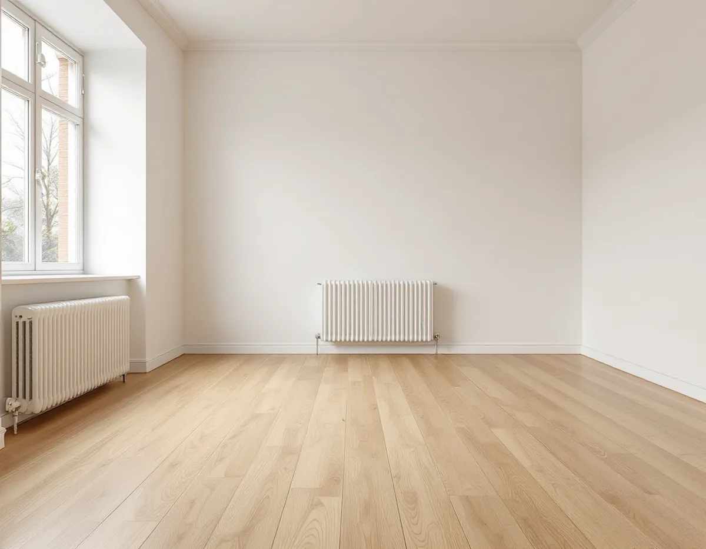
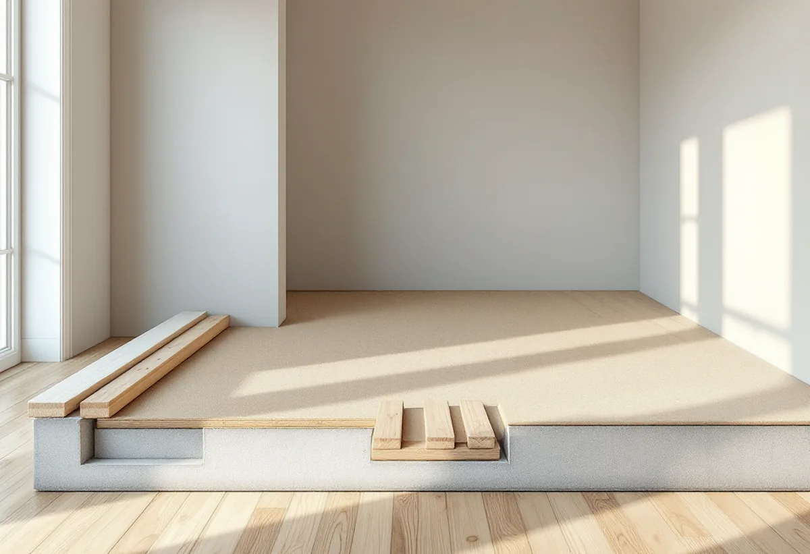
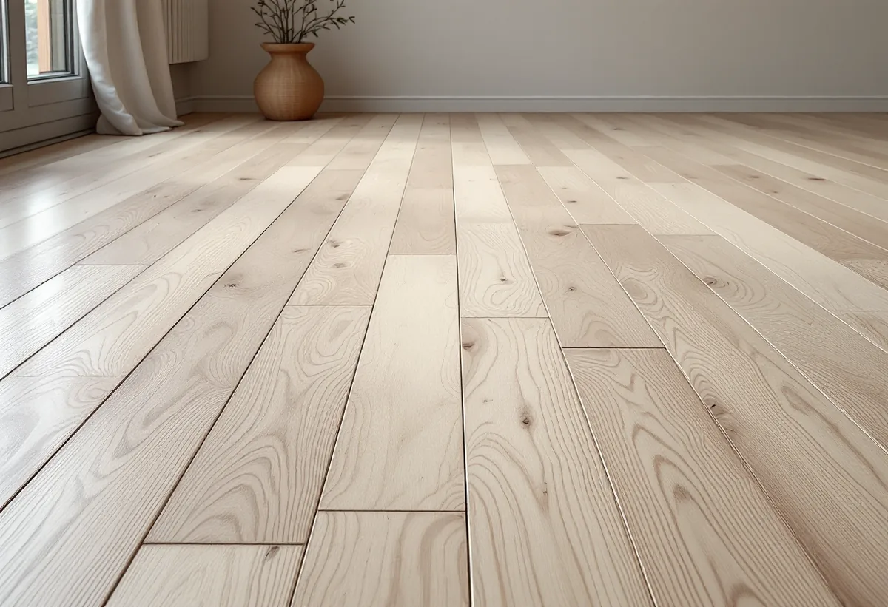

Platsbesök
Vi trycker på golvet och kontrollerar slitskiktet.
Vällingby byggdes under 1950-talet, och i den tidens flerbostadshus låg golven ofta flytande på sand och reglar. Ett sådant golv går att slipa, men det fjädrar och kan bli vågigt om det inte förbereds. Geal Entreprenad AB slipar golv i lägenheter och radhus i Vällingby och berättar om riskerna innan vi börjar.

Enligt stadens vägledning Varsam utveckling av småhus- och villaområden var Vällingby den första tunnelbanestaden och invigdes 1954. Översiktsplanens riksintressedel beskriver Vällingby–Råcksta som landets första så kallade ABC-stad, utbyggd under 1950-talet och ett sammanhållet uttryck för det årtiondet. Ingen skulle ha längre än 900 meters gångväg till tunnelbanan.
Stadens områdesfakta för 2025 räknar 3 891 lägenheter i flerbostadshus i Vällingby. Bostadsrätterna är 2 076, allmännyttans lägenheter 1 498 och de övriga hyresrätterna 597. Till det kommer 449 småhus, varav 228 bostadsrätter och 220 med äganderätt – radhus och kedjehus längst ut från centrum.

Nordiska museet beskriver i Byggnadsvårdsföreningens Materialhörnan hur metoden att lägga flytande golv infördes vid mitten av 1940-talet och snabbt blev populär, bland annat i hyreshus. På betongbjälklaget lades en sandbädd som jämnades ut, och på den lösa träreglar som lamellbrädorna fästes på. Det gav bättre ljudisolering och ett något fjädrande golv. Lamellbrädan, med krysslimmade furulameller och en slityta av lövträ, hade lanserats på 1930-talet.
Har ditt golv lagts så finns det inget att göra åt fjädringen i sig – den hör till konstruktionen. Men den påverkar slipningen, och vi trycker därför på golvet rum för rum innan vi föreslår något. Enligt samma text måste trämaterialet vara absolut torrt för att det inte ska uppstå torksprickor mellan stavarna, och förr hyvlades och handsicklades nylagda golv för att få en perfekt yta. I dag handsicklas golv bara i hörnen där golvslipmaskinen inte kommer åt.
Golvbranschens riktlinjer SLIP 22 säger att undergolvet ska vara stabilt utan svikt. Sviktar golvkonstruktionen kan resultatet bli så kallad ondulering, alltså en vågig yta. Kan svikten inte åtgärdas före slipningen ska kunden informeras om risken innan arbetet börjar, och det gör vi skriftligt.
När golvet är en lamellkonstruktion finns enligt riktlinjerna en generell risk för stavsläpp, alltså att slitskiktet lossnar vid eller efter slipningen. Golventreprenören ska upplysa konsumenten om det. Finns misstanke om stavsläpp, till exempel när golvet har varit vattenskadat, bör man avråda från omslipning. Vi kontrollerar därför slitskiktet med en kniv i en springa i ett hörn och väljer ytbehandling efter risken.
I ett svar om en lägenhet från 1943 i Stockholms närförort skriver Byggnadsvårdsföreningen att läggningsmönstret holländsk parkett och ljusa träslag som björk, ask eller lönn passade bra efter att lamellbrädan lanserats. Har du ett sådant golv vill du sannolikt behålla den ljusa tonen som golvet hade när det var nytt. Då väljer vi slippapper och ytbehandling så att träet inte gulnar mer än nödvändigt.
Riksintressedelen räknar de ursprungliga husens byggnadsdetaljer till det som är värdebärande i Vällingby–Råcksta. Golven inne i lägenheterna nämns inte, men ett välbevarat golv från byggåret är ändå värt att vara rädd om. Ska golvet bytas i stället finns mer under golvläggare i Vällingby.

Vi trycker på golvet och kontrollerar slitskiktet.
Med information om svikt och stavsläpp.
Lösa partier limmas och lister lossas.
Med lågt tryck i finslipningen för att undvika vågor.
Lack eller olja som passar träslaget.
Skötselråd och första rengöringen.
Skatteverket räknar slipning av golv som rotarbete. I en bostadsrätt ska arbetet göras innanför bostadens väggar, tak och golv och avse sådant du ansvarar för enligt stadgarna, och i ett radhus eller kedjehus med äganderätt ska du äga huset och bo i det.
Avdraget är högst 30 procent av arbetskostnaden, som mest 50 000 kronor per person och år, och rot och rut får tillsammans vara högst 75 000 kronor. Material och resor ger inget avdrag. Geal drar avdraget direkt på fakturan.
Golvytan, golvets konstruktion och skick, lagning av lösa partier, träslag och ytbehandling, om möbler ska bäras ut och om flera rum slipas samtidigt. Efter ett gratis platsbesök får du ett skriftligt kostnadsförslag.
Parkett, trägolv, klinker och slipning.
Golvläggning i Stockholm →Takbyte, takbesiktning och plåtarbeten.
Takläggare i Vällingby →Radhusen i riksintresset Vällingby–Råcksta.
Takrenovering i Vällingby →Riksintresset och villaområdena.
Attefallshus i Vällingby →Riksintresset, radhusen och våtzonerna.
Badrumsrenovering i Vällingby →Bygga till i riksintresset.
Byggföretag i Vällingby →Puts från 1950-talet och kulör i riksintresset.
Fasadmålning i Vällingby →Tegel, puts och skivor på tunnelbanestadens hus.
Fasadrenovering i Vällingby →Radhus och kedjehus i riksintresset.
Fönsterbyte i Vällingby →Radhusens fönster.
Fönsterrenovering i Vällingby →Gamla mattor, lim och asbest.
Golvläggare i Vällingby →Kök i lägenheter och radhus.
Köksrenovering i Vällingby →Radhus och lägenheter i ABC-staden.
Målare i Vällingby →Takplåt, rännor och beslag i riksintresset.
Plåtslagare i Vällingby →Entréer, dörrar och räcken på radhusen.
Snickare i Vällingby →Kälvesta och husgrupperna.
Takbyte i Vällingby →Väggar från 1950-talet.
Tapetsering i Vällingby →Radhusen, riksintresset och lovet.
Tillbyggnad i Vällingby →ABC-staden, eternit och föreningen.
Totalrenovering i Vällingby →